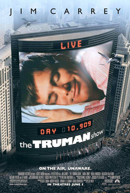

Movie/ TV Series Reviews
The Truman Show

The Truman Show, directed by Peter Weir and released in 1998, is a
brilliant film that explores themes of reality, identity, and
freedom. The movie stars Jim Carrey as Truman Burbank, a man who
is unaware that his entire life is being broadcast to the world as
part of a 24/7 reality television show.
The film's concept is both intriguing and terrifying, and it is
executed with precision and care. The attention to detail in the
set design and cinematography is remarkable, creating a world that
is both familiar and surreal. The score by Philip Glass is also
outstanding, adding to the film's overall atmosphere of tension
and unease.
Jim Carrey delivers a fantastic performance as Truman, capturing
both his charm and his confusion as he slowly begins to unravel
the truth about his life. The supporting cast is equally
impressive, particularly Ed Harris as the show's creator and
director, Christof.
What makes The Truman Show so compelling is its exploration of
larger philosophical questions. The film raises important
questions about the nature of reality, the role of media in
shaping our perceptions of the world, and the importance of
individual freedom. It does so in a way that is accessible and
engaging, without ever feeling preachy or didactic.
Overall, The Truman Show is a masterful piece of filmmaking, one
that has stood the test of time and remains as relevant today as
it was over 20 years ago. It is a thought-provoking and deeply
moving film that is not to be missed.
1 Litre of Tears

1 Litre of Tears is a Japanese television drama series that was
first aired in 2005. The series is based on a true story about a
young girl named Aya Kito, who is diagnosed with an incurable
disease called Spinocerebellar ataxia. The series chronicles Aya's
life as she deals with the physical and emotional challenges of
living with this disease.
The series is a powerful and emotional portrayal of Aya's journey,
and it is expertly crafted to convey the struggles she faced. The
acting in the series is superb, with actress Erika Sawajiri
delivering a stunning performance as Aya. She captures the pain,
frustration, and courage of the character in a way that is both
realistic and deeply moving.
The series does an excellent job of exploring the relationships
between Aya and her family and friends. The show focuses on the
importance of support and empathy, and how they can help someone
deal with a difficult situation. The series also touches on the
themes of love, friendship, and loss, as Aya navigates her way
through the challenges she faces.
One of the strengths of the series is its ability to balance the
emotional weight of Aya's story with moments of humor and hope.
The series doesn't shy away from the difficult moments, but it
also shows that even in the darkest of times, there is always a
glimmer of light to be found.
Overall, 1 Litre of Tears is a powerful and deeply emotional
series that is not to be missed. It is a testament to the human
spirit and the power of resilience, and it will leave you feeling
inspired and uplifted.
Ando-Roid
Ando-Roid is a Japanese television drama series that first aired
in 2017. The series is a sci-fi drama that follows the story of a
young woman named Nanase Sakura, who becomes the caretaker of an
android named Ando Lloyd.
The series has a unique premise, and it does an excellent job of
exploring the relationship between humans and robots. The acting
in the series is superb, with actress Kou Shibasaki delivering a
fantastic performance as Nanase. She captures the character's
determination and vulnerability in a way that is both compelling
and relatable.
The series also has an interesting supporting cast, including
Osamu Mukai as the scientist who created Ando Lloyd, and Takumi
Saito as the detective who is investigating a string of mysterious
deaths that seem to be connected to the android.
One of the strengths of the series is its pacing. The show
balances the sci-fi elements with character development and plot
twists, keeping the audience engaged and intrigued. The series
also does an excellent job of exploring the ethical implications
of creating artificial intelligence, and how it can affect human
emotions and relationships.
The production values of the show are impressive, with great
attention to detail in the set design and special effects. The
series also has a fantastic score by composer Yoko Kanno, which
adds to the overall atmosphere of the show.
Long Vacation

Long Vacation is a Japanese television drama series that first
aired in 1996. The series follows the story of Minami, a talented
pianist who quits her job at a music school after a disappointing
recital. She then meets Sena, a carefree photographer, and the two
embark on a romantic relationship.
The series is a beautifully crafted romantic drama, with excellent
performances by the cast. The chemistry between actress Takako
Matsu and actor Takashi Sorimachi is palpable, and they do an
excellent job of portraying the ups and downs of a relationship.
The supporting cast is also strong, with standout performances by
Eri Watanabe and Yutaka Takenouchi.
One of the strengths of the series is its ability to balance the
romantic elements with the characters' personal growth. Minami and
Sena both face personal challenges that they need to overcome, and
the series does an excellent job of exploring these themes in a
thoughtful and engaging way.
The show also has a fantastic score by composer Tak Matsumoto,
which adds to the overall atmosphere of the series. The soundtrack
features a mix of jazz, classical music, and pop songs, and it
perfectly captures the mood of the show.
Long Vacation is a classic romantic drama that has stood the test
of time. It is beautifully crafted, with excellent performances
and a compelling story. The series explores themes of love,
personal growth, and pursuing one's dreams, and it does so in a
way that is both entertaining and thought-provoking. If you're a
fan of romantic dramas, Long Vacation is a must-watch.